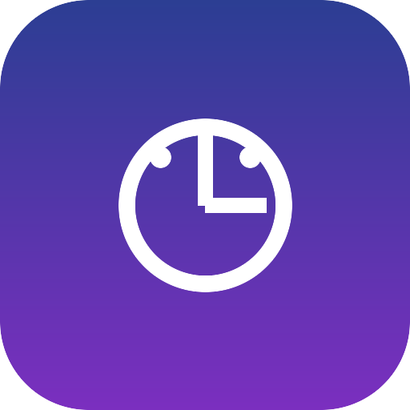

顶栏时间Assit 等越狱插件分发源
添加源地址（在客户端「添加源」里粘贴）： https://your-domain.example/callassist-repo/
https://your-domain.example/callassist-repo/
本页按钮会自动按当前访问域名拼接链接。把整个 callassist-repo/ 目录作为静态站点托管（GitHub Pages / Cloudflare Pages / 任意 Nginx）即可。
callassist-repo/